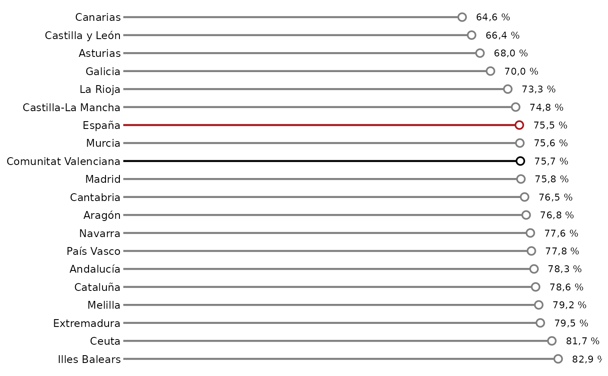
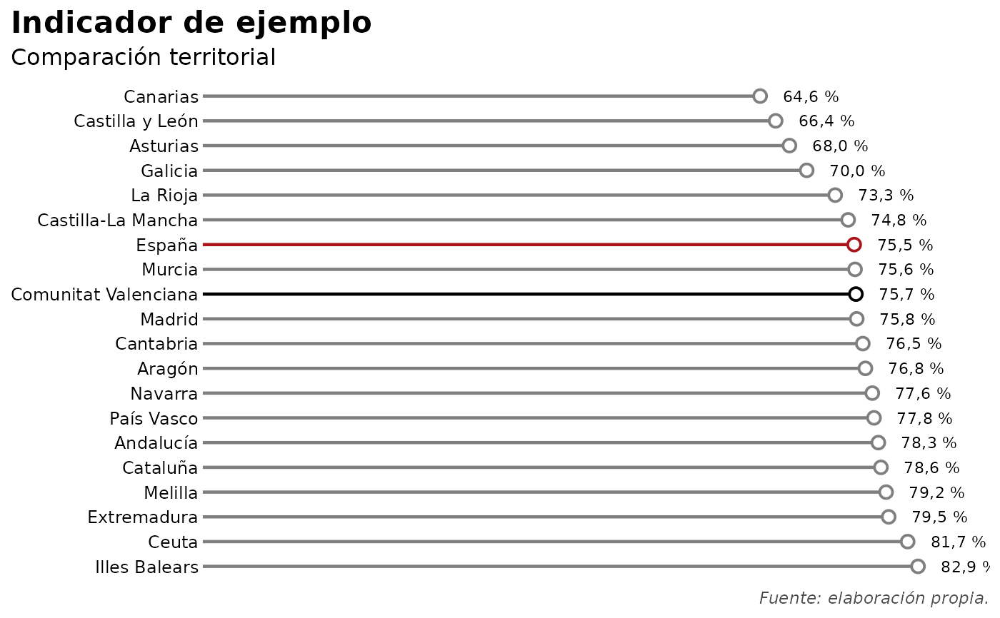

Comparación territorial de un indicador
Código:R/grafico_comparacion_territorial.R
grafico_comparacion_territorial.RdGenera un gráfico horizontal para comparar el valor de un indicador entre distintas categorías, normalmente territorios, en un único período.
Uso
grafico_comparacion_territorial(
datos,
categoria = "territorio",
valor = "valor",
colores_destacados = NULL,
color_resto = "gray50",
titulo = NULL,
subtitulo = NULL,
accuracy = 0.1,
porcentaje = TRUE,
margen = 1.1,
orden_desc = TRUE
)Argumentos
- datos
Un
data.framecon los datos que se desean representar.- categoria
Cadena de texto con el nombre de la variable categórica. Por defecto,
"territorio".- valor
Cadena de texto con el nombre de la variable numérica. Por defecto,
"valor".- colores_destacados
Vector nombrado opcional con colores para categorías concretas. Los nombres deben coincidir con los valores de
categoria.- color_resto
Color utilizado para las categorías no incluidas en
colores_destacados. Por defecto,"gray50".- titulo
Título del gráfico. Por defecto,
NULL.- subtitulo
Subtítulo del gráfico. Por defecto,
NULL.- accuracy
Precisión utilizada para formatear las etiquetas numéricas. Se pasa a
scales::label_number(). Por defecto,0.1.- porcentaje
Si es
TRUE, añade el símbolo%a las etiquetas de los valores. Por defecto,TRUE.- margen
Factor utilizado para ampliar el eje horizontal y dejar espacio para las etiquetas. Por defecto,
1.1.- orden_desc
Si es
TRUE, ordena las categorías de mayor a menor. Si esFALSE, las ordena de menor a mayor.
Detalles
Permite destacar determinadas categorías mediante colores específicos y ordenar los valores de mayor a menor o de menor a mayor.
Cada categoría debe aparecer una sola vez en datos. La función no agrega
ni resume observaciones automáticamente.
Ejemplos
datos_ejemplo <- data.frame(
territorio = c(
"Illes Balears",
"Ceuta",
"Extremadura",
"Melilla",
"Cataluña",
"Andalucía",
"País Vasco",
"Navarra",
"Aragón",
"Cantabria",
"Madrid",
"Comunitat Valenciana",
"Murcia",
"España",
"Castilla-La Mancha",
"La Rioja",
"Galicia",
"Asturias",
"Castilla y León",
"Canarias"
),
valor = c(
82.9, 81.7, 79.5, 79.2, 78.6,
78.3, 77.8, 77.6, 76.8, 76.5,
75.8, 75.7, 75.6, 75.5, 74.8,
73.3, 70.0, 68.0, 66.4, 64.6
)
)
colores_ejemplo <- c(
"Comunitat Valenciana" = "#000000",
"España" = "#AA151B"
)
p <- grafico_comparacion_territorial(
datos_ejemplo,
colores_destacados = colores_ejemplo
)
p

p +
ggplot2::labs(
title = "Indicador de ejemplo",
subtitle = "Comparación territorial",
caption = "Fuente: elaboración propia."
) +
ggplot2::theme(
plot.title.position = "plot",
plot.title = ggplot2::element_text(hjust = 0, face = "bold", size = 16),
plot.subtitle = ggplot2::element_text(size = 12),
plot.caption = ggplot2::element_text(face = "italic", color = "grey30")
)
